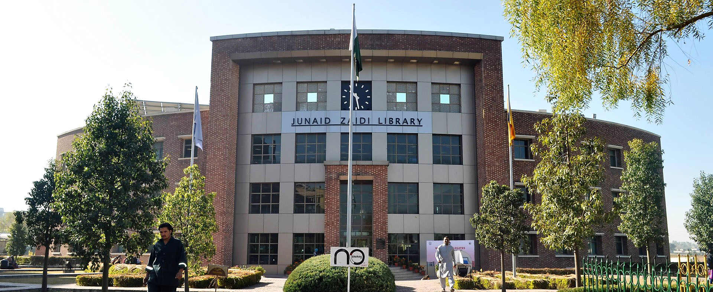

COMSATS Institute of Information Technology
JUNAID ZAIDI LIBRARY

BOOKS
- Computer Science
- - Operating system
- - Data communication and network
- - Design and analysis of algorithm
- - Artificial Intelligence
- Maths
- - Linear Algebra
- - Calculus
- - Multivariable calculus
- - differential equations
- Architecture
- - The Architecture of the City / Aldo Rossi
- - Athmospheres / Peter Zumthor
- - Complexity and Contradiction in Architecture / Robert Venturi
- - Conversations with Students (Architecture at Rice) / Louis Kahn
- Physics
- - Quantum Physics in Minutes
- - Physics of Everyday Phenomena
- - The Future of the Mind
- - Mathematical Methods for Physics and Engineering
- Business
- - Business Law
- - Zero To One
- - Great By Choice
- - The 22 Immutable Laws of Marketing
- Accounting
- - Accounting Made Simple
- - A Brief History of Economic Genius
- - Accounting All-in-One For Dummies
- - Barron’s Accounting Handbook